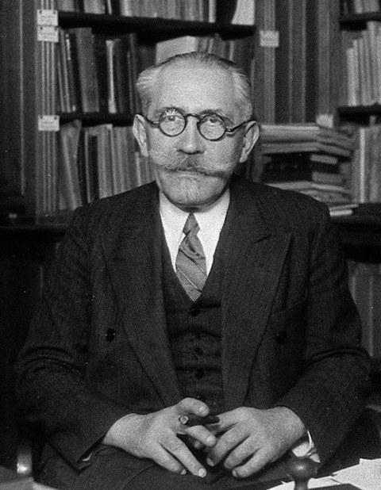
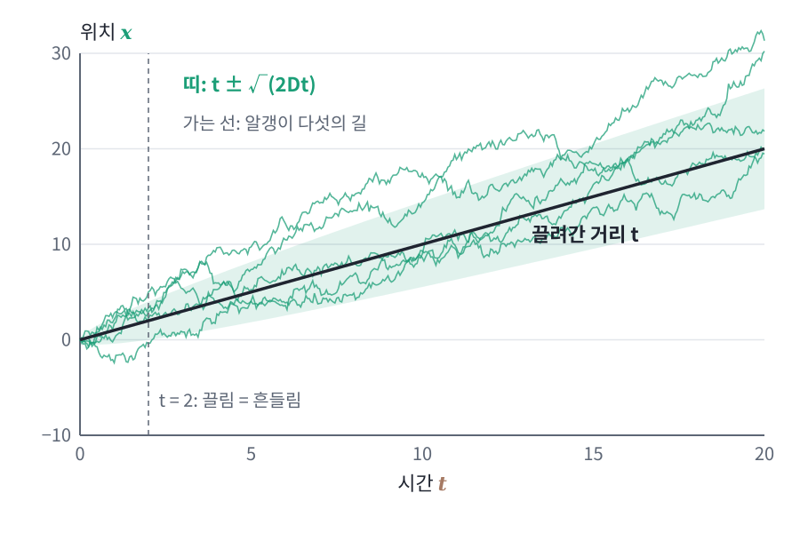

랑주뱅 방정식: 힘에 끌려가며 흔들리는 길
브라운 운동은 아무 힘도 받지 않는 알갱이의 길이다. 그런데 이 장 첫머리의 두 규칙(경사하강에 잡음을 더하는 SGLD와 샘플을 원점 쪽으로 당기며 잡음을 더하는 DDPM)은 걸음마다 샘플을 에너지의 내리막으로 끌면서 흔든다. 알갱이에 힘이 걸리면 그 길은 어떻게 바뀔까?
역사: 랑주뱅의 「보충하는 힘」
1908년 폴 랑주뱅은 프랑스 과학 아카데미 회보에 짧은 글을 싣고, 아인슈타인의 결과를 「완전히 다른 방법으로 무한히 더 간단하게」 얻을 수 있다고 썼다. 그는 알갱이 하나에 뉴턴의 운동 방정식을 쓰고, 물 분자가 주는 힘을 둘로 나눴다. 하나는 속도에 비례해 움직임을 막는 점성 저항 −6π × 점성 × 반지름 × 속도이고, 다른 하나는 방향과 크기가 제멋대로인 「보충하는 힘」이다. 보충하는 힘의 평균이 0이고 알갱이의 운동에너지 평균이 온도로 정해진다는 것만 써서, 그는 아인슈타인의 변위 공식을 몇 줄 만에 다시 얻었다. 분포의 방정식 대신 입자 하나의 운동 방정식에 무작위 힘을 넣는 이 방식이, 오늘날 SGLD와 확산 모델의 샘플러가 한 걸음씩 계산하는 방식이다.

한쪽으로 기운 걸음
힘이 걸린 걸음을 가장 간단하게 흉내 내 보자. 동전 걸음에서 확률 하나만 바꾸면 되므로, 앞에서 본 격자 걷기에서 출발하는 것이 가장 작은 변화다. 격자 위의 사람이 오른쪽을 0.3, 왼쪽을 0.2, 위와 아래를 0.25씩의 확률로 고른다. 오른쪽으로 무언가가 조금 미는 셈이다. 한 걸음의 가로 이동은 평균 0.3 − 0.2 = 0.1칸이고, 그 둘레의 분산은 0.5 − 0.1² = 0.49다. n걸음 뒤 가로 위치는 걸음들의 합이므로 평균은 0.1n, 분산은 0.49n이다.
| 걸음 수 n | 끌려간 거리 (평균) | 흔들림 (표준편차) | 끌려간 거리 ÷ 흔들림 |
|---|---|---|---|
| 1 | 0.1 | 0.70 | 0.14 |
| 100 | 10 | 7.0 | 1.4 |
| 10000 | 1000 | 70 | 14 |
끌려간 거리는 걸음 수에 비례하고 흔들림은 걸음 수의 제곱근에 비례한다. 그래서 짧게 보면 흔들림이 이기고, 길게 보면 끌림이 이긴다. 한 걸음에서는 미는 힘이 흔들림의 7분의 1도 안 되지만 1만 걸음이면 14배다.
끌려가는 움직임에 브라운 운동 더하기
위치에너지가 U(x)이면 알갱이는 −∇U의 힘을 받는다. 물속의 작은 알갱이는 속도를 아주 빨리 잊어서 가속하는 시간을 무시할 수 있고, 힘과 점성 저항이 비기는 속도로 곧바로 움직인다고 보면 된다. 속도에 비례해 움직임을 막는 힘의 비례 계수를 ζ(제타)라 하면 그 속도는 −∇U/ζ다. 마찰을 운동량이 줄어드는 비율 γ로 적는 책도 많은데, 그 γ는 ζ를 질량으로 나눈 ζ/m이다. 이 장은 질량이 빠진 식을 많이 쓰므로 힘 ÷ 속도인 ζ를 쓴다. 이 끌려가는 움직임에 브라운 운동을 더한 것이 다음 식이다.
비례 계수 ζ는 마찰 계수(friction coefficient)라 부르고, 구가 점성 있는 액체 속을 움직이면 스토크스 저항 법칙에 따라 ζ = 6π × 점성 × 반지름이다. 이 식을 랑주뱅 방정식 (힘에 끌려가는 움직임에 브라운 운동을 더해 입자 하나의 무작위한 길을 적는 식, Langevin equation)이라 한다. 관성을 빼고 쓴 이 형태를 오버댐프드(과감쇠, overdamped) 랑주뱅 방정식이라 부르기도 한다. 오른쪽처럼 결정론적인 변화 dt 항에 브라운 운동의 변화 dB 항을 더해 적은 식은 확률 미분 방정식(stochastic differential equation, SDE)이라 부른다.

ML에서: SGLD의 한 걸음
이제 이 장 첫머리의 규칙, 곧 경사하강 한 걸음마다 표준정규 잡음에 √(2η)를 곱해 더하는 규칙을 다시 보자. ζ = 1, Δt = η, D = 1로 두면 랑주뱅 방정식의 한 걸음은 θ ← θ − η∇U(θ) + √(2η)z, 곧 SGLD의 한 걸음이다. 끌려가는 항은 걸음 η에 비례하고 브라운 운동 항은 √η에 비례하는 것이 정확히 이 식의 모양이다. 잡음에 η를 곱하면 분산이 η²이므로, 이것은 2DΔt = η², 곧 D = η/2인 랑주뱅 방정식이 된다. 학습률을 줄이면 D도 0으로 가서 잡음이 사라진 경사하강으로 돌아간다. 첫머리의 실험(손실 U = θ²/2, η = 0.01)에서 η를 곱한 잡음을 썼을 때 θ의 분산이 0.0051로 작았던 까닭이다.
문제 6. 통장 잔고는 언제 늘었다고 믿을까
아르바이트를 하는 민준의 통장은 하루에 평균 1만 원씩 늘지만, 그날그날 쓰는 돈 때문에 하루 변화가 표준편차 5만 원만큼 들쭉날쭉하다(날마다 독립). (가) 며칠이 지나면 평균으로 늘어난 돈이 흔들림의 표준편차만큼 커지는가? (나) 흔들림의 두 배가 되려면?

n일 뒤 늘어난 돈이 n만 원, 흔들림이 5√n만 원이니까 n = 5√n, 25일이요.

(나)는요?

25일에 같아졌으니까 두 배면 50일이요.

n = 2 × 5√n을 풀면 √n = 10, 100일이야. 흔들림이 √n으로 자라니까 비율을 두 배로 하려면 기간이 네 배가 돼.

기운 걸음에서 100걸음에 1.4배, 1만 걸음에 14배였던 거랑 같네요. 비율이 10배가 되는 데 걸음은 100배요.
그래요. 끌림이 흔들림을 이기는 때는 (흔들림 ÷ 끌림)²에 비례해요.

한 달 치 가계부만 보고 돈이 모인다고 하면 안 되는 거네요. 그 두 배를 확신하려면 석 달은 넘게 봐야 하고요.
문제 7. 알갱이는 언제 속도를 잊나
20°C 물속에 지름 1 μm, 밀도 1.05 g/cm³인 알갱이가 떠 있다(확산 계수 D ≈ 4.3 × 10⁻¹³ m²/s, 물의 점성 1.0 × 10⁻³ Pa·s). 1초 간격으로 재면 「속도」가 0.93 μm/s였다. (가) 운동에너지로 정해지는 알갱이의 열속도 √(kT/m)는? (나) 스토크스 저항으로 마찰 계수 ζ를 구하고, 알갱이가 속도를 잊는 시간 m/ζ를 구하라. (다) 두 속도는 어떻게 이어지는가?

그런데 알갱이는 질량이 있는 물체예요. 온도 T의 물속에 있으니 (가)를 계산할 수 있죠.

방향 하나당 운동에너지 평균이 kT/2니까 열속도는 √(kT/m)이에요. 질량이 5.5 × 10⁻¹⁶ kg이라 2.7 mm/s예요.

2.7 mm/s면 1초에 자기 지름의 2700배를 가는 속도잖아요. 그런데 1초에 1 μm도 못 간다고요? 둘 중 하나가 틀린 것 같은데요.
둘 다 맞아요. 그 속도를 얼마나 오래 유지하는지 보세요. 운동량은 m/ζ의 시간 안에 줄어들어요. (나)로 가 볼까요?
스토크스 저항이면 ζ = 6π × 점성 × 반지름 = 6π × 0.001 × 0.5 × 10⁻⁶ = 9.4 × 10⁻⁹ kg/s예요.
5.5 × 10⁻¹⁶을 9.4 × 10⁻⁹로 나누면… 5.8 × 10⁻⁸초, 58나노초요. 그동안 2.7 mm/s로 가면 0.16 nm밖에 못 가요. 원자 하나 크기도 안 되네요.

58나노초마다 방향을 새로 뽑는 걸음이구나. 그보다 긴 간격으로 재면 동전 걷기처럼 보이고, 58나노초보다 짧게 재야 진짜 열속도 2.7 mm/s가 나오겠네.

그래요. 잰 속도는 간격을 줄일수록 커지다가 m/ζ 근처에서 열속도에 닿아 멈춰요. 브라운 운동은 m/ζ보다 긴 시간만 보는 근사예요. 아인슈타인이 속도 대신 일정 시간 동안 옮겨 간 거리를 예측한 것이 그래서 현명한 선택이었어요.
문제 4에서 10⁻⁴초 간격으로 잰 93 μm/s도 아직 2.7 mm/s보다 한참 느리네요. 10⁻⁴초는 58나노초보다 한참 기니까 그때까지는 브라운 운동으로 봐도 되는 거고요.
문제 8. 한 걸음에서는 잡음이 더 큰데
손실 U(θ) = θ²/2에서 SGLD θ ← θ − η∇U(θ) + √(2η)z를 θ = 3에서 η = 0.01로 시작한다. (가) 첫 걸음에서 기울기 항이 옮기는 거리와 잡음 항의 표준편차를 견주라. (나) 기울기가 3 근처에 머문다고 보면, 몇 걸음이 지나야 끌려간 거리가 흔들림만큼 커지는가? (다) η를 0.0001로 줄이면?

기울기 항은 0.01 × 3 = 0.03이고 잡음은 √0.02 = 0.141이에요. 잡음이 다섯 배 가까운데요. 이러면 내리막으로 못 내려가지 않아요?
한 걸음만 보면 그렇지. 그런데 끌려간 거리는 걸음 수에 비례하고 흔들림은 걸음 수의 제곱근에 비례하잖아. 0.03n = 0.141√n이면 n = (0.141/0.03)² = 22걸음이야.
통장 문제랑 똑같네요. (흔들림 ÷ 끌림)²요.
(다)는요?
기울기 항 0.0003, 잡음 0.0141이니까 비가 47배예요. 2222걸음이 필요하네요. 걸음을 줄일수록 잡음이 점점 이기는 것 같은데요?
시간으로 재 봐. 한 걸음이 시간 η니까 22 × 0.01 = 0.22, 2222 × 0.0001 = 0.22로 같아.
그래요. 잡음을 √(2η)로 두면 걸음을 얼마로 나누든 같은 시간에 끌림이 흔들림을 따라잡아요. 한 걸음에서 잡음이 크다고 걱정할 필요가 없는 까닭이에요.
동영상을 한 프레임씩 넘기면 손이 덜덜 떨리는데 1초씩 넘기면 그냥 손을 뻗는 걸로 보이는 거랑 같네요.